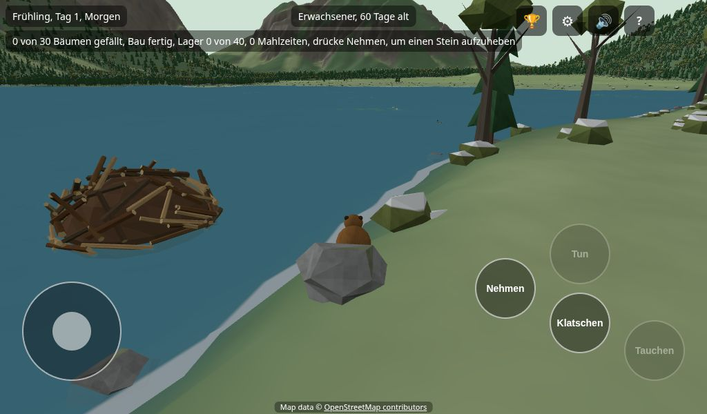
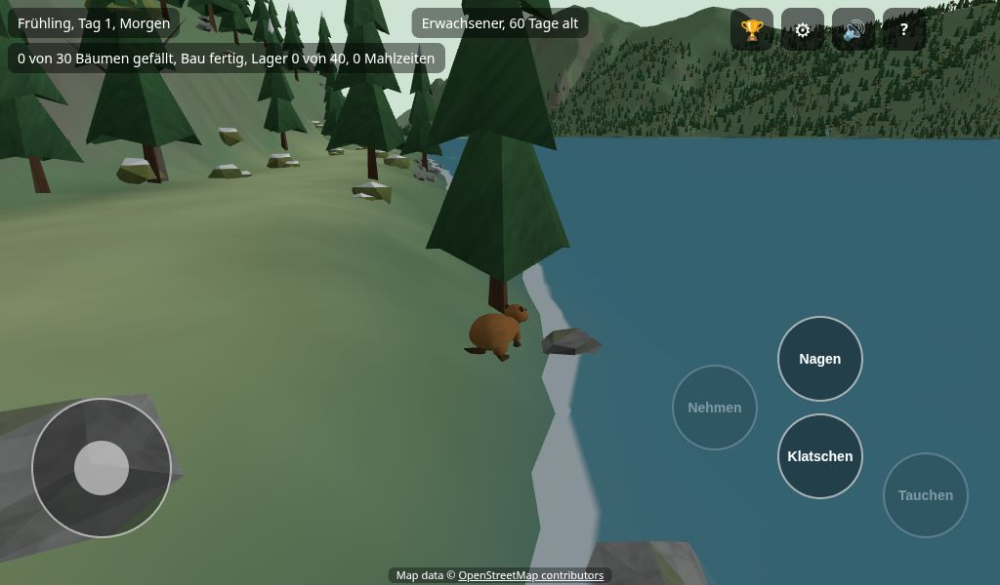
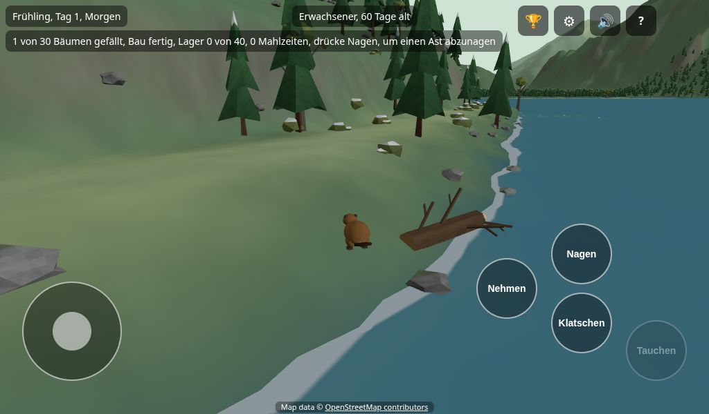
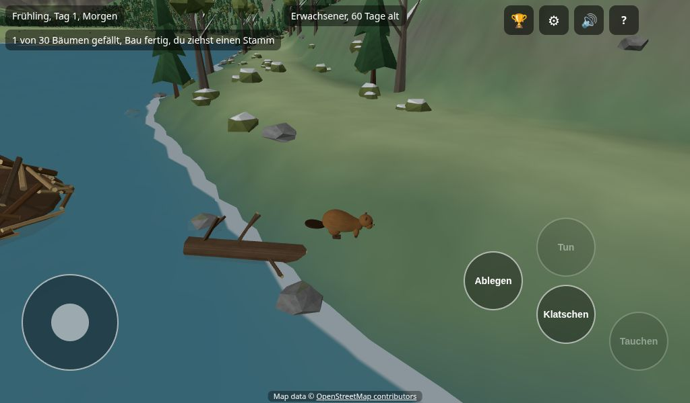
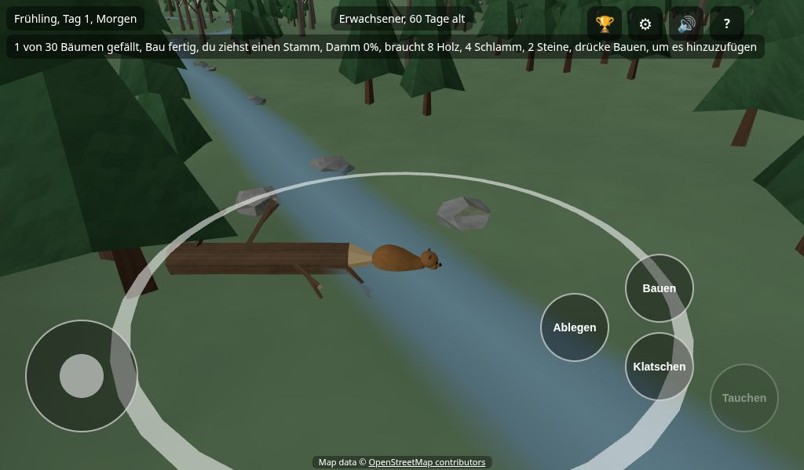
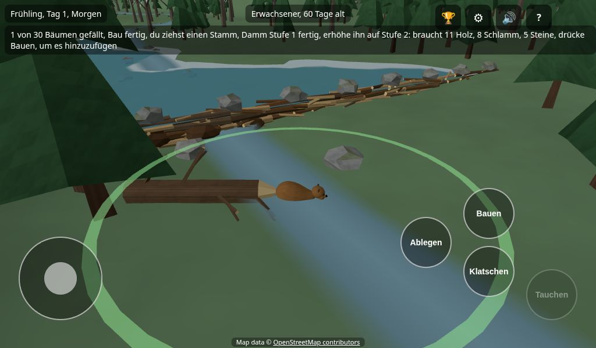

Du bist ein Biber in einem echten Tal in Österreich. Dir kann nichts passieren, und du kannst nicht verlieren. Es eilt nicht. Sieh dich um und bau etwas!
Du fängst als Babybiber an, zu Hause im Bau bei Mama und Papa. Die kleine Karte oben links zeigt, was zu tun ist. Ihre Knöpfe heißen Zurück, Weiter und Schließen.
Jetzt bist du ein Jugendlicher und kannst nagen, ziehen und bauen.
Das macht ein Jugendlicher. Iss zuerst eine Kleinigkeit im Bau: Nimm ein Seerosenblatt, trag es hinein und drücke Essen (E), um es zu essen. Leg ein zweites in das Vorratslager an der Tür. Dann der Reihe nach:
Schieb den Stick, um zu gehen. Zieh über den leeren Bildschirm, um die Ansicht zu drehen. Geh ins Wasser, um zu schwimmen.

Geh zu einem Baum und bleib stehen. Drücke Nagen (E), bis er fällt. Nagen ist der Knopf Tun: Das Wort darauf ändert sich, je nachdem, was du tun kannst.

Der Baum ist jetzt ein Stamm. Stell dich an den Stamm und drücke Nehmen (G), um ihn zwischen die Zähne zu nehmen. Drücke noch einmal (jetzt steht Ablegen darauf), um loszulassen.

In der Nähe eines Baches liegt ein weißer Ring auf dem Boden. Das ist ein Platz für einen Damm. Trag den Stamm in den Ring.

Stell dich in den Ring und drücke Bauen (E). Der Damm braucht auch Schlamm und Steine. Oben links steht, was fehlt.

Stell dich ins seichte Wasser und drücke Nehmen, um Schlamm aufzunehmen. Geh zu einem Stein und drücke Nehmen, um ihn aufzuheben. Trag ihn in den Ring und drücke Bauen.
Wenn der Damm fertig ist, staut sich das Wasser zu einem Teich. Dort wachsen Seerosenblätter. Teiche sind sichere Orte.

Du hast einen Teich gemacht! Wenn du erwachsen bist, baust du dir einen eigenen Bau.
Tippe auf eine Frage.
Er sagt dir, was jeder Knopf gerade jetzt tun würde. Zum Beispiel: Drücke Nehmen, um ein Seerosenblatt aufzuheben. Wenn du unsicher bist, lies ihn.
Geh an einem Bach entlang. Die Ringe erscheinen, wenn du nah bist. Die kleine Karte oben links sagt, in welcher Richtung der nächste Ring liegt.
Lies den Text oben links. Dort steht, wie viel Holz, Schlamm und wie viele Steine noch fehlen. Bring sie nacheinander und drücke im Ring Bauen.
Zieh einen Stamm ins seichte Wasser. Sieh zum Wasser und drücke Bauen. Oben links steht, was nicht stimmt: zu tief, kein Wasser vor dir oder kein tiefes Wasser in der Nähe. Versuch es an einer anderen Stelle.
Das ist Absicht. Babys bleiben in der Nähe von Mama und Papa. Geh in den Bau und benutze die Schlafknöpfe, um groß zu werden, oder erkunde einfach die Gegend am Teich.
Such den See. Der Bau liegt an seinem Ufer. Ein Erwachsener kann auch das Test-Menü benutzen, um an einen Ort zu springen.
Schließe die anderen Apps auf dem Tablet und öffne das Spiel noch einmal. Wenn es immer noch langsam ist, frag einen Erwachsenen.
Nein. Das Spiel speichert alle halbe Minute von selbst. Wenn du es wieder öffnest, siehst du deine Spiele. Drücke bei deinem auf Weiterspielen. Es gibt vier Plätze für Spiele, also kann auch ein Freund eines haben. Umbenennen gibt einem Spiel einen Namen. Löschen wirft einen Biber weg, deshalb fragt es zweimal.
Ja, wenn ein neues Spiel anfängt und jedes Mal, wenn ein neues Baby geboren wird. Such dir ein Fell aus (fünf Brauntöne, jeder in fünf Helligkeiten), einen Hut, einen Schal, eine Schwanzfarbe und einen Namen. Oben dreht sich der Biber, so siehst du ihn. Drücke auf Los, wenn er dir gefällt.
Auf einem Tablet gibt es unten links einen Stick und unten rechts runde Knöpfe. Am Computer benutzt du Tastatur und Maus. Die Tasten stehen auch unten links auf dem Bildschirm (H versteckt sie).
| Was | Tablet | Computer |
|---|---|---|
| Gehen und schwimmen | Der Stick | W A S D oder die Pfeiltasten |
| Die Ansicht drehen | Über den leeren Bildschirm ziehen | Mit der Maus ziehen |
| Zoomen | Zwei Finger zusammen- oder auseinanderziehen | Mausrad |
| Tauchen (halten) | Tauchen | Leertaste |
| Schwanzklatschen | Klatschen | T |
| Einen Stamm, ein Seerosenblatt, Schlamm oder einen Stein aufheben oder ablegen | Nehmen (Ablegen, wenn du etwas hältst) | G |
| Tun, was gerade dran ist: Nagen, Bauen, Flicken, Lagern, Essen, Geben, Reden, Graben | Tun (das Wort darauf ändert sich) | E |
Der ?-Knopf oben rechts öffnet diese Seite. Hier bringt Die ersten Schritte zeigen die kleine Karte zurück.
Der Lautsprecher-Knopf neben dem ? schaltet den Ton aus und an. In der Nähe eines Baches hörst du ihn rauschen. Im Tal hörst du den Wind, tagsüber Vögel und nachts Grillen und eine Eule. Im Bau und unter Wasser ist es leiser. Auch was du tust, macht Geräusche: Nagen, ein fallender Baum, ein Platschen, ein Schwanzklatschen, Schwimmen, Essen, Dinge aufheben und ablegen und Bauen: Stämme, Schlamm und Steine an einem Damm oder Bau, und ein fröhliches Klingeln, wenn ein Stück fertig ist. Biber plappern, wenn sie reden, und ein Partner zwitschert, wenn er mit dir kommt. Im Tal spielt leise Musik, im Traum eine hellere, klimpernde Melodie. Im Traum klingeln die Süßigkeiten, und die anderen kichern und jubeln. Auch Tiere sprechen. Eine Ente quakt, und Eule, Fuchs, Luchs und Bär rufen eine Warnung, wenn sie dich bemerken. Der Ton startet nach deiner ersten Berührung.
Der Zahnrad-Knopf öffnet die Einstellungen. Du kannst die Musik und die Geräusche lauter oder leiser machen, die runde Karte ändern (drehend, Norden oben oder aus) und die Schatten an- oder ausschalten. Startbildschirm speichert dein Spiel und geht zurück zur Liste der Spiele. Schatten sehen schön aus, aber manche Tablets werden damit langsam, deshalb sind sie am Anfang aus. Wenn du sie änderst, startet das Spiel neu, genau da, wo du warst.
Der Pokal-Knopf öffnet Was ich geschafft habe. Es hat vier Reiter: Bauen, Holz und Futter, Familie, und Tal und Tiere. Ein Haken heißt, dass du es geschafft hast. Ein Ring heißt, noch nicht. Was man zählt, zeigt einen Balken, zum Beispiel 3 von 10, und drei Punkte für die drei Stufen. Tippe eins an, um über den Kacheln zu lesen, wie du es schaffst. Tippe noch einmal, um den Hinweis zu verstecken. Mit der Maus zeigst du einfach darauf.
Neu, zum Ausprobieren: Die runde Karte darunter zeigt das Land um dich herum. Der gelbe Pfeil bist du. Die braune Kuppel ist dein Zuhause. N zeigt Norden. Oben auf der Karte ist die Richtung, in die du schaust.
Tippe auf einen Titel, um ihn zu öffnen.
Ein Damm braucht Holz, Schlamm und Steine. Ein langer Stamm zählt als zwei Stücke Holz. Du kannst immer nur eine Sache tragen.
Wenn er fertig ist, kannst du zurückkommen und ihn höher machen, bis zu drei Stufen. Ein höherer Damm macht einen größeren Teich. Ein fertiger Damm kann den nächsten Dammplatz in der Nähe öffnen.
Ein grüner Ring ist ein Damm, den du begonnen hast. Ein goldener, leuchtender Ring heißt, dass etwas abgenutzt ist und geflickt werden will.
Ein Bau besteht aus zehn Stücken Holz. Er steht im Wasser. Seine Tür liegt unter Wasser: Tauche an der Tür, um hineinzugehen. Ist der Teich so niedrig, dass du nicht tauchen kannst, geh einfach über den Schlamm hinein.
Drinnen kannst du essen, auf dem Nest ruhen und schlafen. Um hinauszugehen, stell dich an das Wasserloch im Boden und drücke Tauchen.
Dämme, der Bau und das Vorratslager nutzen sich mit der Zeit ab. Ein abgenutztes zeigt Lücken und einen goldenen Ring. Stell dich daneben, bring, was oben links verlangt wird, und drücke Flicken. Wenn Bau und Lager beide Holz brauchen, nennt der Text oben links zuerst das schlechtere und sagt, dass das andere auch Holz braucht. Wenn du zu lange wartest, geht es kaputt, und du baust es neu. Niemand wird verletzt.
Das Lager hält Futter für den Winter. Nichts Schlimmes passiert, wenn es leer ist.
Ein Spieltag dauert acht echte Minuten. Es gibt eine Dämmerung, einen hellen Tag und eine dunkle Nacht. Eine Jahreszeit dauert zehn Tage. Das Tal ist im Frühling grün, im Sommer hell, im Herbst bunt und im Winter verschneit.
Im Bau kannst du dich mit einer Tafel ausruhen:
Drücke nachts im Bau auf Träumen. Dein Biber schläft ein und träumt vom Süßigkeitenland. Jede Nacht ist es ein neues Land. Im Traum ist dein Biber auch ein Marshmallow-Biber, in allen Farben des Regenbogens.
Die Knöpfe sind fast dieselben wie im Tal. Der Stick oder W A S D geht und schwimmt. Hüpfen (Leertaste) hüpft an Land und springt aus der Schokolade. Planschen (T) planscht mit dem Schwanz.
Der Traum dauert, so lange du willst. Drücke oben rechts auf Aufwachen, um aufzuwachen. Dann ist es Morgen im Bau.
Das Spiel endet nie. Jeder Biber wird erwachsen, und dann übernimmt ein Junges.
Such als Erwachsener einen einzelnen Biber. Horch auf ein Schwanzklatschen in der Ferne und folge den Nachrichten, die sagen, in welche Richtung du gehen sollst. Nach einer Nachricht zeigen dir weiche goldene Funken auf dem Boden eine Weile den Weg. Wenn du in seine Nähe schwimmst, klatscht er mit dem Schwanz und folgt dir. Bau einen Bau und einen Damm an einem guten Platz. Dein Partner zieht ein, wenn der Bau fertig ist. Hin und wieder erzählt dir dein Partner, was er sieht, zum Beispiel einen guten Dammplatz oder Seerosenblätter. Am ersten Frühlingstag, nachdem ihr eine Jahreszeit zusammen wart, kommt ein Junges zur Welt, und du spielst das Junge.
Bis zu vier Freunde können im selben WLAN in einem Tal spielen. Ein Tablet ist der Gastgeber, die anderen treten bei. Das geht mit der App auf einem Tablet, nicht mit der Version aus dem Play Store.
Gastgeber sein: Such auf dem Startbildschirm das Spiel aus, setz den Haken bei Freunde dürfen in diesem Spiel mitspielen und starte es. Eine Meldung zeigt die Adresse, zum Beispiel 192.168.0.7.
Mitmachen: Tippe auf dem Startbildschirm die Adresse des Gastgebers ein und drücke Beitreten. Such dir aus, wie dein Biber aussieht, und du erscheinst neben dem Bau einer freien Familie. Dein Aussehen bleibt deins.
Freunde sehen einander, nagen Bäume um (ein Baum, den ein Freund fällt, ist für alle weg), ziehen Stämme, tragen Schlamm und Steine und bauen und flicken Dämme zusammen. Stell dich nah zu einem Freund und drück Reden (der Tun-Knopf). Eine Karte geht auf mit ein paar Fragen, zum Beispiel Schwimmen wir zusammen?. Tipp auf eine, und der Freund sieht sie mit Ja! und Jetzt nicht, und du siehst die Antwort. Zwei erwachsene Freunde können auch ein Paar werden: Einer tippt auf der Karte Paar werden?, der andere sieht die Frage und tippt Ja, ein Paar!. Ein Paar baut zusammen eine Burg: Jeder kann den ersten Stamm legen, und jeder kann sie fertig bauen oder flicken. Schwimm am Eingang hinein, wie bei deiner eigenen, und geh im Raum herum. Drück Tauchen am Wasserloch, um hinauszuschwimmen. Trag ein Seerosenblatt oder einen Ast im Maul in den runden Raum und drück Essen, um es zu essen. Am Vorratslager des Gastgebers legt Lagern das Stück aus deinem Maul auf den ersten freien Platz. Mit leerem Maul nimmt derselbe Knopf das erste Stück heraus. Am ersten Frühlingstag, nachdem die Burg fertig ist, bekommt jeder aus dem Paar ein Junges und spielt es. Die zwei alten Biber sind Mama und Papa. Um kein Paar mehr zu sein, stellt euch dicht zusammen: Einer tippt auf der Karte Kein Paar mehr?, der andere tippt Ja, trennen. Die Burg ist dann ein altes Zuhause. Das Spiel wird nur auf dem Tablet des Gastgebers gespeichert. Wenn der Gastgeber das Spiel schließt, gehen alle zurück zum Startbildschirm.
Jedes Leben hat seine eigene Liste. Eine Nachricht erscheint, wenn du etwas schaffst. Was man zählt, hat drei Stufen: ein Punkt für jede geschaffte Stufe, wie ●○○, und eine Zahl, wie weit du bis zur nächsten bist.
?shadows=1 geöffnet wird, die Schatten der Sonne an oder aus. Sie sind am Anfang aus, weil das Tablet damit zu langsam ist.?sound=0 startet das Spiel ohne Ton.?dream=1 startet das Spiel in einem Traum, und ?seed=5 wählt das Süßigkeitenland.Datenschutz: Das Spiel sammelt nichts über dich.
Kartendaten: © OpenStreetMap-Mitwirkende (ODbL, openstreetmap.org/copyright) für Wasser und Bodenbedeckung. Gelände: BEV, Österreich (CC BY 4.0). Die Bilder auf dieser Seite sind aus diesen Daten gezeichnet.
Geräusche: Aufnahmen von BigSoundBank (Joseph Sardin und andere, CC0), OpenGameArt (CC0) und Freesound (CC0). Der Jubel ist „Video Game Cheerful Ending“ von Almitory (CC BY 4.0), und der fallende Baum stammt aus Yo Frankie! der Blender Foundation (CC BY 3.0). Die ganze Liste steht in public/audio/CREDITS.md.